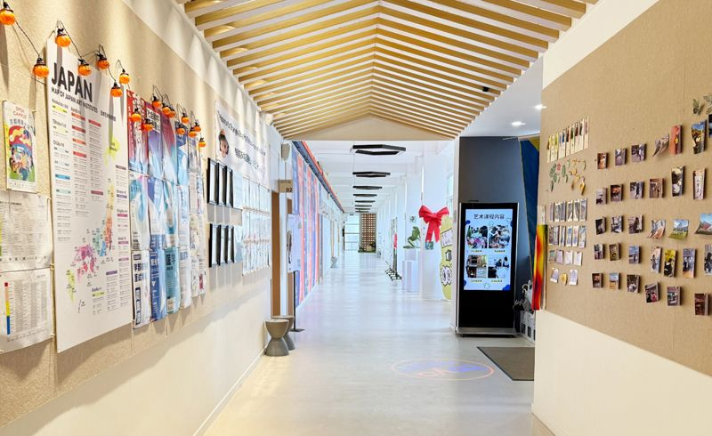
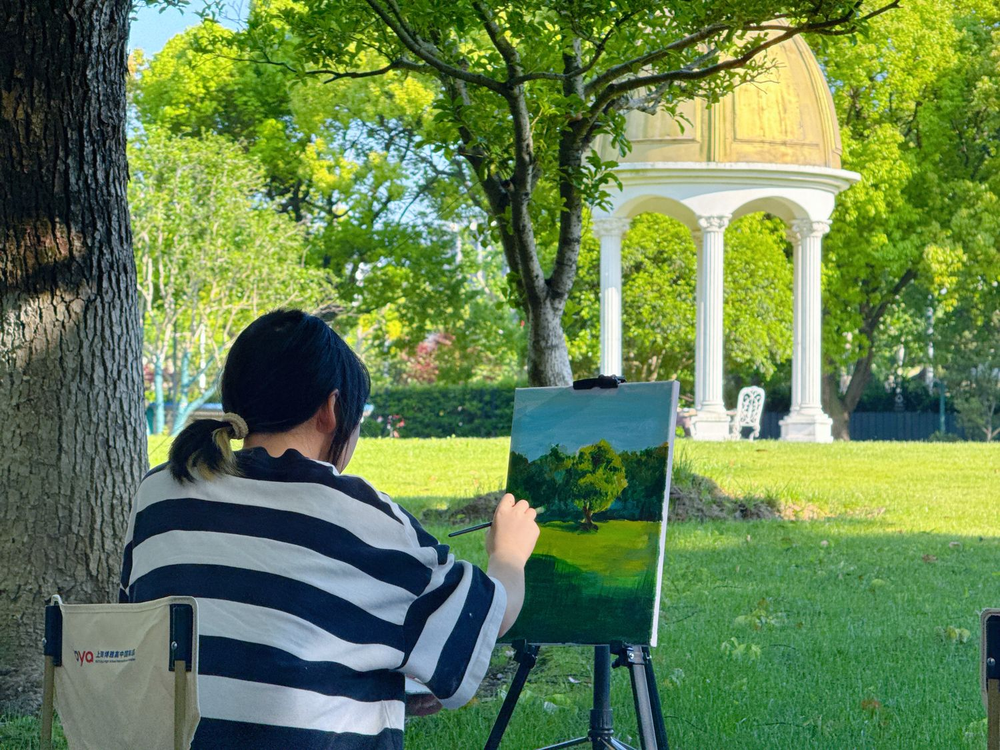
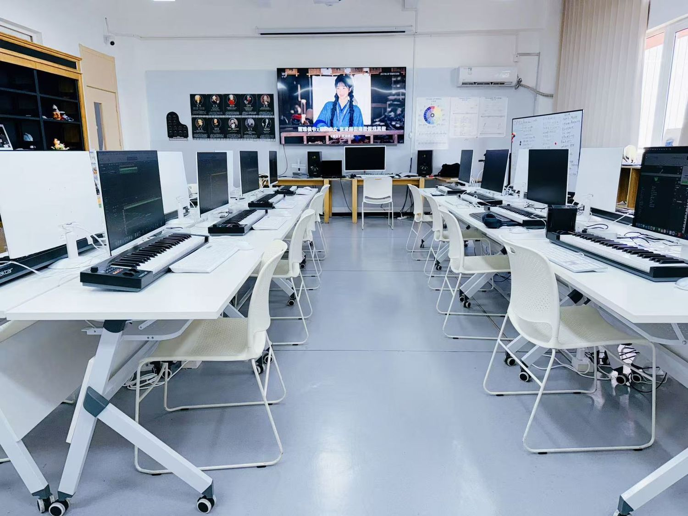
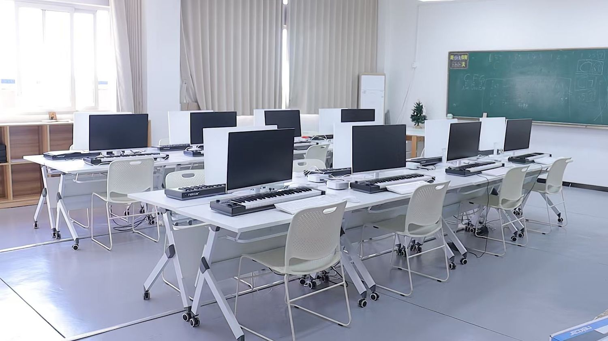

US Pathway Program
American high school curriculum, Grades 10–12 · 21 credits · one-on-one university counseling, aimed at America’s universities.
Learn more
Shanghai · Est. 2015
Boya International Academy is a licensed, Cognia-accredited private high school in Nanhui University Town, Pudong, Shanghai — with pathways to universities in the United States, China, South Korea, Japan, Singapore, Malaysia and beyond.

Welcome to Boya
Founded in 2015, Boya International Academy sits in Nanhui University Town, Pudong New Area, Shanghai — a neighborhood of universities and academic institutions. The school holds a duly authorized educational license and operates as a private institution under the jurisdiction of the Education Bureau of Pudong New Area.
We encourage every student to cultivate artistic aptitudes and pursue diversified, individual development — holding fast to our founding principle: “All for the Well-being of Every Child.”
About the SchoolAcademics
Each student follows a path designed around their strengths — the American high school program toward US universities, Japanese-medium art and music tracks, the Korea Pathway with its official university partnerships, and the Joint Examination class for students from Hong Kong, Macao and Taiwan.
American high school curriculum, Grades 10–12 · 21 credits · one-on-one university counseling, aimed at America’s universities.
Learn more
Japanese-medium tracks in fine art and music, taught in a dual-teacher model with Tokyo-based instructors.
Learn more
An integrated program with dedicated studios, an in-house recording studio, and articulated undergraduate pathways.
Learn more
Official partnerships with Yonsei and Pukyong National Universities, with dual-teacher Korean instruction.
Learn moreNew · Flagship Pathway
Boya offers an American high school curriculum for Grades 10–12 — a rigorous 21-credit academic core, progressive English development, and truly personal application counseling.
Academic Core
English Language Arts, mathematics, laboratory sciences and social studies in a sequential 21-credit program — a consistent, rigorous academic record that speaks for itself.
English & Test Planning
Dedicated English Language Development courses with individualized planning for standardized tests such as TOEFL and the SAT, paced to each student’s starting point.
Application Counseling
Course selection, activity development, essays and final applications — every student builds a coherent, competitive profile with a dedicated counselor.
Signature Program
Through official cooperation with Yonsei University and Pukyong National University, Boya offers a stable, well-supported route to undergraduate study in Korea.

Campus Life
Charity sales, athletics, festivals and more than a dozen student-run clubs — campus life at Boya is designed to develop the whole person.

Student-directed performances — skits, dance, bands and poetry — on a full professional stage.

Track and field, long jump, shot put and rope skipping, with every class competing as one.

Each March, Grade 12 students take the formal pledge of adulthood before parents and teachers.

Two school-wide tournaments a year — fitness, cohesion and team spirit on the court.
The best way to understand a school is to walk its campus. Book a visit and meet our admissions team in person.